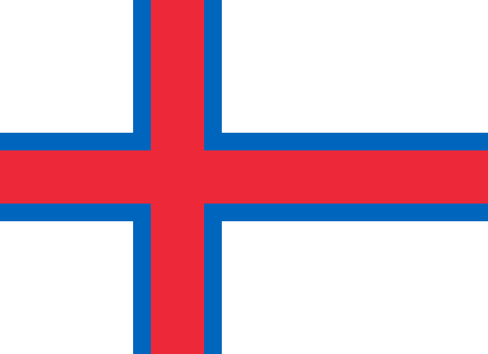

Continent
Europe
How Europe fits together
Greek, Roman, Celtic, Nordic, Slavic and other cultures shaped early European routes and cities.
Kingdoms, city-states, trade leagues and religious centers formed the map visitors still recognize.
Industrial rail, ports and national movements tied cities and regions into modern travel corridors.
Wars, borders, reconstruction and European cooperation reshaped the continent's institutions.
Europe is easiest to understand as connected regions: flights, trains, ferries and short cross-border stays.
 Part ofWorld locationsMore continents, countries and cities.
Part ofWorld locationsMore continents, countries and cities.Countries / areas53
Population744M
Area10.4M km2
Region groups5
Why go
Europe turns one long-haul trip into many different worlds: Roman streets, Nordic coastlines, Alpine rail routes, island summers, old capitals and food cultures that change every few hours by train. For travelers coming from far away, the real sell is density: short hops, deep history, strong public transport and a continent where one itinerary can feel like five separate journeys.
Browse by subregion
Area10.4 million km2
Population744 million
Population ranking#3
Share of world population9.0%
Listed countries / areas53
Largest countryRussia
Smallest countryVatican City
Time zonesUTC -1 to +5
Route logic
- North: Nordic capitals, fjords, Baltic cities, islands and winter routes.
- West: Atlantic cities, Benelux density, French routes and British-Irish city breaks.
- Central: Alpine passes, Danube cities, German-speaking hubs and Central European capitals.
- East: Baltic, Slavic, Black Sea and Caucasus routes with larger distances.
- South: Iberia, Italy, the Balkans, Greece, islands and Mediterranean coastlines.
Countries by region
Filter by group, then sort countries by population, area or Big Mac Index.
| Central & Eastern Europe / Caucasus | 3.1M | 29,743 km2 | ||
| Central & Eastern Europe / Caucasus | 10.2M | 86,600 km2 | -36.6% | |
| Central & Eastern Europe / Caucasus | 4M | 69,700 km2 | ||
| Central & Eastern Europe / Central Europe | 10.9M | 78,866 km2 | -21.2% | |
| Central & Eastern Europe / Central Europe | 9.5M | 93,028 km2 | -37.0% | |
| Central & Eastern Europe / Central Europe | 37.4M | 312,696 km2 | -10.0% | |
| Central & Eastern Europe / Central Europe | 5.4M | 49,035 km2 | ||
| Central & Eastern Europe / Eastern Europe | 9.1M | 207,600 km2 | ||
| Central & Eastern Europe / Eastern Europe | 2.7M | 33,851 km2 | -39.2% | |
| Central & Eastern Europe / Eastern Europe | 146M | 17,098,242 km2 | ||
| Central & Eastern Europe / Eastern Europe | 32.9M | 603,550 km2 | -50.7% | |
| Central & Eastern Europe / German-speaking Europe | 9.2M | 83,871 km2 | ||
| Central & Eastern Europe / German-speaking Europe | 83.5M | 357,114 km2 | ||
| Central & Eastern Europe / German-speaking Europe | 41k | 160 km2 | ||
| Central & Eastern Europe / German-speaking Europe | 9.1M | 41,285 km2 | +38.0% | |
| Northern & Western Europe / Baltic states | 1.4M | 45,228 km2 | ||
| Northern & Western Europe / Baltic states | 1.8M | 64,589 km2 | ||
| Northern & Western Europe / Baltic states | 2.9M | 65,300 km2 | ||
| Northern & Western Europe / British & Irish Isles | 5.5M | 70,273 km2 | ||
| Northern & Western Europe / British & Irish Isles / United Kingdom | 57M | 130,279 km2 | ||
| Northern & Western Europe / British & Irish Isles / United Kingdom | 5.5M | 77,933 km2 | ||
| Northern & Western Europe / British & Irish Isles / United Kingdom | 3.2M | 20,779 km2 | ||
 Faroe Islands | Northern & Western Europe / Nordic countries | |||
| Northern & Western Europe / Nordic countries | 5.7M | 338,455 km2 | ||
| Northern & Western Europe / Nordic countries | 392k | 103,000 km2 | ||
| Northern & Western Europe / Nordic countries / Scandinavia | 6M | 42,924 km2 | -5.2% | |
| Northern & Western Europe / Nordic countries / Scandinavia | 5.6M | 386,252 km2 | +15.3% | |
| Northern & Western Europe / Nordic countries / Scandinavia | 10.6M | 450,295 km2 | -2.1% | |
| Northern & Western Europe / Western Europe | 66.4M | 551,695 km2 | ||
| Northern & Western Europe / Western Europe | 38k | 2 km2 | ||
| Northern & Western Europe / Western Europe / Benelux | 11.8M | 30,528 km2 | ||
| Northern & Western Europe / Western Europe / Benelux | 682k | 2,586 km2 | ||
| Northern & Western Europe / Western Europe / Benelux | 18.1M | 41,543 km2 | ||
| Southern & Southeastern Europe / Balkans | 3.9M | 56,594 km2 | ||
| Southern & Southeastern Europe / Balkans | 2.1M | 20,271 km2 | ||
| Southern & Southeastern Europe / Balkans / Eastern Balkans | 6.4M | 110,879 km2 | ||
| Southern & Southeastern Europe / Balkans / Eastern Balkans | 19M | 238,397 km2 | -40.8% | |
| Southern & Southeastern Europe / Balkans / Western Balkans | 2.4M | 28,748 km2 | ||
| Southern & Southeastern Europe / Balkans / Western Balkans | 3.4M | 51,197 km2 | ||
| Southern & Southeastern Europe / Balkans / Western Balkans | 1.6M | 10,887 km2 | ||
| Southern & Southeastern Europe / Balkans / Western Balkans | 623k | 13,812 km2 | ||
| Southern & Southeastern Europe / Balkans / Western Balkans | 1.8M | 25,713 km2 | ||
| Southern & Southeastern Europe / Balkans / Western Balkans | 6.6M | 77,474 km2 | ||
| Southern & Southeastern Europe / Iberian Peninsula | 88k | 468 km2 | ||
| Southern & Southeastern Europe / Iberian Peninsula | 10.7M | 92,212 km2 | ||
| Southern & Southeastern Europe / Iberian Peninsula | 49.3M | 505,990 km2 | ||
| Southern & Southeastern Europe / Italian Peninsula | 58.9M | 301,340 km2 | ||
| Southern & Southeastern Europe / Italian Peninsula | 34k | 61 km2 | ||
| Southern & Southeastern Europe / Italian Peninsula | 882 | 0.44 km2 | ||
| Southern & Southeastern Europe / Mediterranean Europe | 1.4M | 9,251 km2 | ||
| Southern & Southeastern Europe / Mediterranean Europe | 10.4M | 131,957 km2 | ||
| Southern & Southeastern Europe / Mediterranean Europe | 574k | 316 km2 | ||
| Southern & Southeastern Europe / Mediterranean Europe | 85.7M | 783,562 km2 | -8.2% |
Global events in Europe
 Wimbledon
Wimbledon Copenhagen Jazz Festival
Copenhagen Jazz Festival Montreux Jazz Festival
Montreux Jazz Festival Tour de France
Tour de France Airbeat One
Airbeat One Scorpions Lisbon
Scorpions Lisbon Amundi Evian Championship
Amundi Evian Championship Genesis Scottish Open
Genesis Scottish Open Swedish House Mafia Electric Love Salzburg
Swedish House Mafia Electric Love Salzburg Armin van Buuren Electric Love Festival
Armin van Buuren Electric Love Festival Bad Bunny Madrid Night 1
Bad Bunny Madrid Night 1 North Sea Jazz Festival
North Sea Jazz Festival Umbria Jazz
Umbria Jazz Armin van Buuren ZOA City Zurich
Armin van Buuren ZOA City Zurich Bad Bunny Madrid Night 2
Bad Bunny Madrid Night 2 Lollapalooza Berlin
Lollapalooza Berlin Scorpions Vicenza
Scorpions Vicenza Armin van Buuren Ultra Europe
Armin van Buuren Ultra Europe Swedish House Mafia Ushuaia Ibiza 12 July
Swedish House Mafia Ushuaia Ibiza 12 July Armin van Buuren Les Deferlantes Sud de France
Armin van Buuren Les Deferlantes Sud de France Scorpions Lyon
Scorpions Lyon The Open Championship
The Open Championship Armin van Buuren Parookaville
Armin van Buuren Parookaville David Guetta Tomorrowland Belgium
David Guetta Tomorrowland Belgium Parookaville
Parookaville Scorpions Paris
Scorpions Paris Tomorrowland
Tomorrowland Tomorrowland Belgium
Tomorrowland Belgium Armin van Buuren Tomorrowland Freedom
Armin van Buuren Tomorrowland Freedom Swedish House Mafia Ushuaia Ibiza
Swedish House Mafia Ushuaia Ibiza Jazz in Marciac
Jazz in Marciac Scorpions Strasbourg
Scorpions Strasbourg Bad Bunny Brussels
Bad Bunny Brussels Jazzaldia
Jazzaldia ISPS Handa Women's Scottish Open
ISPS Handa Women's Scottish Open LIV Golf UK
LIV Golf UK Scorpions Gliwice
Scorpions Gliwice Armin van Buuren Campus Festival
Armin van Buuren Campus Festival Armin van Buuren Tomorrowland Mainstage
Armin van Buuren Tomorrowland Mainstage Scorpions Lodz
Scorpions Lodz Swedish House Mafia Ushuaia Ibiza 26 July
Swedish House Mafia Ushuaia Ibiza 26 July Scorpions Helsinki
Scorpions Helsinki Wacken Open Air
Wacken Open Air AIG Women's Open
AIG Women's Open Scorpions Tallinn
Scorpions Tallinn Swedish House Mafia Ushuaia Ibiza 2 August
Swedish House Mafia Ushuaia Ibiza 2 August Tiesto at UNVRS
Tiesto at UNVRS Brutal Assault
Brutal Assault